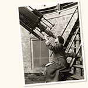

Browse Yerkes Observatory

- 1893 Solar Eclipse Expedition (2)
- 1900 Solar Eclipse Expedition (42)
- 1901 Solar Eclipse Expedition (235)
- 1912 Solar Eclipse Expedition (1)
- 1918 Solar Eclipse Expedition (43)
- 1919 Solar Eclipse (2)
- 1919 Solar Eclipse Expedition (1)
- 1922 Solar Eclipse Expedition (2)
- 1923 Solar Eclipse Expedition (85)
- 1925 Solar Eclipse Expedition (7)
- 1935 Solar Eclipse (1)
- 1945 Solar Eclipse Expedition (29)
- 1952 Solar Eclipse (2)
- Abetti, Giorgio (2)
- Adams, John Couch (1)
- Adams, Walter Sydney (2)
- Aguilar, Felix (1)
- Airy, George Biddell (1)
- Aitken, Robert Grant (1)
- Allegheny Observatory Buildings, Instruments, Equipment (2)
- Allegheny Observatory Buildings, Instruments, Equipment, Grounds (1)
- Allen, Frances (1)
- Aller, Lawrence Hugh (1)
- Alter, Dinsmore (1)
- American Association of Variable Star Observers (3)
- American Astronomical Society (25)
- Anders, Edward (1)
- Apache Point Observatory Buildings, Instruments, Equipment, Grounds (6)
- Area of the Sixth Corps (2)
- Astronomers (5)
- Astronomische Gesellschaft (4)
- Astrophysical Observatory of Potsdam Buildings, Instruments, Equipment (2)
- Baade, Walter (2)
- Barnard Observatory Buildings, Instruments, Equipment, Grounds (1)
- Barnard, Edward Emerson (45)
- Barnard, Rhoda Calvert (1)
- Barrett, Emily (1)
- Barrett, Helen Montgomery (1)
- Barrett, Storrs Barrows (3)
- Bartlett, Albert Allen (1)
- Beals, Carlyle Smith (2)
- Becker, Ernst Emil Hugo (1)
- Bengt Strömgren (2)
- Berlin Observatory Buildings, Instruments, Equipment, Grounds (2)
- Berlin-Babelsberg Observatory Buildings, Instruments, Equipment, Grounds (1)
- Bobrovnikoff, Nicholas Theodore (1)
- Bos, Cornelia Manders van den (3)
- Bos, Willem Hendrik van den (1)
- Boss, Lewis (1)
- Brashear, John Alfred (1)
- Burbidge, Eleanor Margaret (1)
- Burnham, Sherburne Wesley (6)
- Burton, Ernest DeWitt (2)
- Calvert, Mary Ross (3)
- Cape of Good Hope Observatory Buildings, Instruments, Equipment (1)
- Carl-Zeiss-Stiftung (1)
- Carnegie, Andrew (1)
- Carnegie, Louise Whitfield (1)
- Carpenter, Edwin Francis (1)
- Center for Astrophysical Research in Antarctica (1)
- Chamberlin, Thomas Chrowder (1)
- Chandrasekhar, Subrahmanyan (11)
- Chapman, Sydney (2)
- Charlier, Carl (2)
- Chicago views (1)
- Clark, Alvan (7)
- Clark, Alvan Graham (6)
- Clark, Mary Mitchell Willard (1)
- Clerke, Agnes Mary (1)
- Comets (115)
- Constellations (7)
- Daniel, Zaccheus (1)
- Danjon, André-Louis (1)
- Darwin, George Howard (1)
- David, Louis (1)
- Dingle, Herbert (1)
- Dominion Observatory Buildings, Instruments, Equipment, Grounds (1)
- Douglass, Andrew Ellicott (1)
- Draper, Henry (1)
- Dufay, Jean Claude Barthélemy (1)
- Dunér, Nils Christoffer (2)
- Dyson, Frank Watson (1)
- Earth (2)
- Earth atmosphere (1)
- Eddington, Arthur Stanley (5)
- Edmondson, Frank Kelley (1)
- Einstein, Albert (4)
- Ellerman, Ferdinand (1)
- Elvey, Christian Thomas (1)
- Flammarion, Camille (1)
- Foote, Henry M. (1)
- Fracastoro, Mario Girolamo (2)
- Frost (16)
- Frost, Edwin Brant (12)
- Galaxies (54)
- Galaxy Clusters (21)
- Gale, Henry Gordon (2)
- Gaposchkin, Cecilia Payne (4)
- Gill, David, Sir (1)
- Giuseppe, Gentili de (1)
- Goldberg, Leo (1)
- Goodsell Observatory Buildings, Instruments, Equipment (1)
- Gorkom, Jacqueline H. van (1)
- Gould, Benjamin Apthorp (1)
- Greenstein, Jesse Leonard (2)
- Griffith Observatory Buildings, Instruments, Equipment (1)
- Grossman, Lawrence (2)
- Gushee, Vera (2)
- Haas, Walter H. (1)
- Hale, Evelina Conklin (5)
- Hale, George Ellery (9)
- Hale, Sirius (1)
- Hall, Angeline (1)
- Hall, Asaph (1)
- Hamburg-Bergedorf Observatory Buildings, Instruments, Equipment, Grounds (2)
- Hansen, Julie Marie Vinter (2)
- Harper, William Rainey (2)
- Hartmann, Johannes Franz (1)
- Heckman, Otto Hermann Leopold (1)
- Heidelberg Observatory Buildings, Instruments, Equipment (1)
- Henyey, Louis George (1)
- Herbig, George Howard (1)
- Hertzsprung, Ejnar (1)
- Hetzler, Charles (1)
- Hill, George William (1)
- Hiltner, William Albert (1)
- Holden, Edward Singleton (1)
- Horvath, Mr. (3)
- Hoyle, Fred (1)
- Hubble, Edwin Powell (5)
- Huggins, Margaret Lindsay Murray (2)
- Huggins, William (1)
- Hughes, Stanley H. (2)
- Hujer, Karel (1)
- Hunter, Alan (1)
- Hyakutake, Yuji (2)
- International Astronomical Union (3)
- International Astrophysical Conference on Novae and White Dwarf stars (1)
- International Union for Co-operation in Solar Research (24)
- Janssen, Pierre Jules César (1)
- Jeans, James (2)
- Jordrell Bank Observatory (1)
- Joy, Alfred Harrison (1)
- Justin, Edward M. (1)
- Kamensky, M. (1)
- Kapteyn, Jacobus Cornelius (1)
- Keeler, James Edward (3)
- Keenan, Phillip Childs (2)
- Kenwood Astrophysical Observatory Buildings, Instruments, Equipment, Grounds (8)
- Kirchhoff, Gustav Robert (1)
- Kourganoff, Vladimir (3)
- Krebs, Ernest (1)
- Kuiper, Gerard P. (5)
- La Plata Observatory Buildings, Instruments, Equipment (6)
- Lamb, Donald Q. (2)
- Langley, Samuel Pierpont (2)
- Le Verrier, Urbain Jean Joseph (1)
- Lee, Oliver Justin (3)
- Lehmann-Filhés, Rudolf (1)
- Lemaître, Georges (1)
- Lemkowitz, Julius (2)
- Leonard, Frederick Charles (1)
- Leuschner, Armin O. (1)
- Lick Observatory Buildings, Instruments, Equipment, Grounds (5)
- Lindblad, Bertil (2)
- Lindley, William M. (1)
- Lindquist, Alfred, Mrs. (1)
- Lindsay, Eric Mervyn (1)
- Lockyer, Joseph Norman (1)
- Los Angeles, California (3)
- Lowell Observatory Buildings, Instruments, Equipment, Grounds (1)
- Lowell, Percival Lawrence (1)
- Lundin, Robert (1)
- MacMillan, William Duncan (1)
- Maunder, Annie Russell (1)
- McDonald Observatory Buildings, Instruments, Equipment, Grounds (52)
- McDonald, William Johnson (2)
- Merrill, Paul Willard (1)
- Meteoroids (19)
- Meyer, Peter (2)
- Michelson, Albert Abraham (3)
- Middlebury College Observatory Buildings, Instruments, Equipment, Grounds (1)
- Midwest Astronomers Group (4)
- Milky Way (94)
- Miller, Richard H. (1)
- Milne, Edward Arthur (3)
- Minnaert, Marcel Gilles Jozef (1)
- Mitchell, Maria (1)
- Mitchell, Samuel Alfred (1)
- Mohler, Orren Cuthbert, (1)
- Monterrubio, Joaquín Gallo (1)
- Moon (105)
- Morgan, Helen Barrett (1)
- Morgan, William Wilson (27)
- Moulton, Forest Ray (2)
- Mount Wilson Observatory Buildings, Instruments, Equipment, Grounds (54)
- Mount Wilson Observatory Staff (2)
- Müller, Gustav (1)
- Nebulae (56)
- Neuchâtel Observatory Buildings, Instruments, Equipment, Grounds (2)
- Newall, Robert Stirling (1)
- Newcomb, Simon (1)
- Nice Observatory Buildings, Instruments, Equipment (1)
- Nicolet, Marcel (1)
- Novae (2)
- O'Dell, Charles R. (4)
- Oetjen, Richard J. (1)
- Oka, Takeshi (3)
- Oppolzer, Theodor von (1)
- Osterbrock, Donald E. (1)
- Owren, Leif (1)
- Page, Thornton Leigh (1)
- Pahlen, Emanuel, Baron von der (1)
- Palomar Observatory Buildings, Instruments, Equipment, Grounds (12)
- Palomar Observatory Events (1)
- Paraskevopoulos, Dorothy Block (3)
- Paraskevopoulos, Dorothy Block, 1891-1967 (1)
- Paraskevopoulos, John S. (1)
- Paris Observatory Buildings, Instruments, Equipment (1)
- Parkhurst, John Adelbert (4)
- Parsons, Harriett (1)
- Pasadena, California (1)
- Payne, Josephine Vinecore. (1)
- Payne, William Wallace (1)
- Perkins Observatory Buildings, Instruments, Equipment (3)
- Perkins Observatory Buildings, Instruments, Equipment, Grounds (1)
- Pettit, Edison (1)
- Pettit, Hannah Steele (1)
- Pickering, Edward Charles (2)
- Planets (25)
- Planets, Minor (3)
- Plaskett, John Stanley (1)
- Poincaré, Henri (1)
- Prehistoric bones (4)
- Proctor, Richard Anthony (1)
- Pulkovo Observatory Buildings, Instruments, Equipment, Grounds (1)
- Radley, Anna (4)
- Ramsey, William (2)
- Rayleigh, John William Strutt (2)
- Redman, Roderick Oliver (2)
- Riccò, Annibale (2)
- Richardson, Robert Shirley (1)
- Ridell, Charles (2)
- Roe, Edward Drake (2)
- Roman, Nancy (1)
- Ross, Frank Elmore (1)
- Rosse, William Parsons (2)
- Rowland, Henry Augustus (3)
- Rubin, Vera C. (1)
- Rudnick, Paul (1)
- Runge, Carl (1)
- Russell, Henry Norris (3)
- Rust, Carl (1)
- Saturn (1)
- Scheiner, Julius (1)
- Schiaparelli, Giovanni Virginio (1)
- Schild, Rudolph E. (4)
- Schlesinger, Frank (1)
- Schmidt, Bernhard (1)
- Schwarzschild, Karl (3)
- Schwarzschild, Martin (1)
- See, Thomas Jefferson Jackson (1)
- Seeliger, Hugo von (1)
- Sen, H. K. (1)
- Shajn, Grigory Abramovich (1)
- Shapley, Harlow (4)
- Sherman, Frances (1)
- Shoemaker, Carolyn (1)
- Simpson, John A. (1)
- Sitter, Willem de (2)
- Slipher, Vesto Melvin (1)
- Sloan Digital Sky Survey (1)
- Southern California (1)
- Spencer Jones, Harold (1)
- Stam, Huldah Wilkins (1)
- Star clusters (1)
- Star Clusters (62)
- Stars (5)
- Steavenson, William Herbert (1)
- Stebbins, Joel (1)
- Stone, Ellen Mickel (2)
- Stone, Ronald Cecil (4)
- Struve, Gustav Wilhelm Ludwig (1)
- Struve, Otto (16)
- Struve, Otto Wilhelm (1)
- Sullivan, Frank Roche (3)
- Sun (90)
- Swasey, Ambrose (2)
- Swerdlow, Noel M. (3)
- Swings, Polydore (1)
- Tarter, Jill C. (1)
- Texas Symposium (1)
- Thomas, Richard Nelson (1)
- Titus, John (1)
- Tucker, Richard Hawley (1)
- Unidentified Observatory Buildings, Instruments, Equipment (3)
- University of California (1)
- University of Chicago (5)
- Van Biesbroeck, George (19)
- Van Maanen, Adriaan (1)
- Vandervoort, Peter (3)
- Vogel, Hermann Carl (2)
- Wagman, Nicholas E. (2)
- Waldemeier, Max (1)
- Wallace, Robert J. (1)
- Wallenquist, Åke (1)
- Wares, Gordon Webb (1)
- Waterfield, Reginald Lawson (1)
- Weaver, Harold Francis (1)
- Whitford, Albert Edward (1)
- Wickham, Evelyn Wornham (1)
- Williams Bay (18)
- Wilson, Ralph Elmer (1)
- Wolf, Max (2)
- Wolff, Sidney C. (1)
- Woolley, Richard van der Riet (1)
- World's Columbian Exposition (4)
- Wurm, Karl (1)
- Yamasaki, M. (1)
- Yerkes Observatory (1095)
- Yerkes Observatory Activities (12)
- Yerkes Observatory Buildings, Instruments, Equipment, Grounds (800)
- Yerkes Observatory Events (68)
- Yerkes Observatory Staff (123)
- Yerkes, Charles Tyson (2)
- York, Donald G. (2)
- Young, Charles Augustus (1)
- Zanstra, Herman (1)